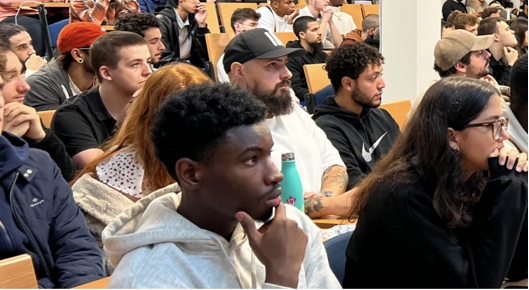
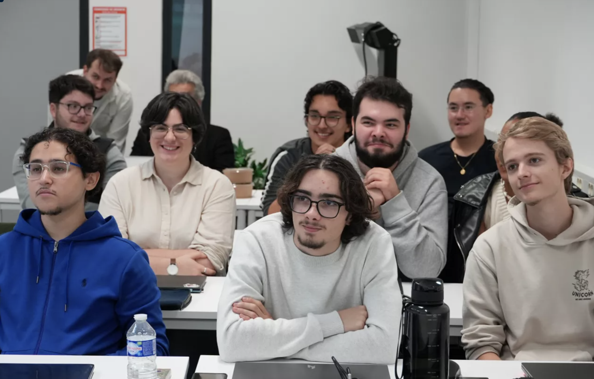
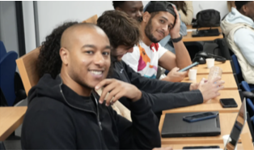
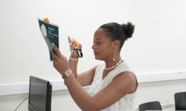

Histoire HETIC
HETIC, au cœur des technologies numériques
HETIC est née d'une intuition. Ses fondateurs ont pressenti que les technologies numériques abolissaient les frontières traditionnelles. HETIC est une école d'un genre nouveau.

HETIC : les origines
HETIC est née avec le millénaire, en plein éclatement de la « Bulle Internet ». La rentrée inaugurale s'est déroulée en 2002. La promotion P2005 comptait 17 étudiants. Trois ans plus tard, 15 d'entre eux ont été les premiers héticiens sur le marché. Au croisement de l'informatique, du commerce et du multimédia : l'école avait pour slogan : « Internet est notre monde. »
HETIC croise trois disciplines : le design, le développement et le business. Les trois cofondateurs illustrent cette nature hybride. Denys Chomel est graphiste et illustrateur de presse ; Jérôme Kanapa (décédé en 2014) réalisateur et producteur, Marc-François Mignot-Mahon, aujourd'hui président de Galileo Global Entrepreneur, entrepreneur.
Entre 2002 et 2008, l'entrée à HETIC se faisait à Bac+2. Un tiers des étudiants étaient déjà titulaires d'un diplôme universitaire de technologie (DUT), spécialité Services et réseaux de communication. Avec son cursus sur trois ans, HETIC a été la première école en France à proposer un titre professionnel de niveau Bac+5 consacré au web.
En 2004, un héticien crée Synerg'hetic. Implantée à HETIC, l'association fonctionne comme un cabinet de conseil et effectue des missions pour des clients externes et pour l'école. Elle est admise en 2005 au sein de la Confédération nationale des junior-entreprises.
HETIC : la reconnaissance
En 2008, le cursus central de HETIC devient accessible en post-bac. Les études héticiennes sont reconnues par une certification de niveau I par la Commission nationale de la certification professionnelle.
HETIC est un creuset d'entrepreneurs. Au sein de la promotion qui a étudié entre 2008 et 2011, près de 12 % des étudiants créent leur propre entreprise. 83 % sont embauchés dès la sortie et 5 % sont en CDI.
Pour sa capacité à professionnaliser les étudiants, HETIC est élue en 2013 la meilleure école web française. Ce classement établi par Le Figaro mêlait les universités, les écoles publiques et établissements privés.
HETIC a inauguré une antenne en Inde en 2017, sur le campus de Bangalore.
HETIC : en tête des classements !
Si notre école se situe au 27 bis rue du Progrès, ce n'est pas un hasard ! HETIC est N°1 des écoles web depuis 2013.
HETIC : le futur

HETIC a connu un directeur emblématique entre 2002 et 2019 : Jean Christophe Beaux. Les trois valeurs qu'il défend : la rigueur, l'enthousiasme et la cohésion. Le flambeau est repris en 2023 par l'héticien (promotion 2011) et entrepreneur Alexandre Sigoigne.
Un héticien, Léo Largillet, exerce pour le mandat 2023-2024 la présidence de la Confédération européenne des junior-entreprises (JE Europe).
Le campus historique de HETIC se métamorphose. Horizon : le 25e anniversaire de l'école, en 2027. HETIC repense son parcours de formation historique, le Programme Grande École (PGE). Il réaffirme la volonté d'HETIC d'être l'école de référence des technologies numériques.
Envie de rejoindre HETIC ?
[ Les étapes ]
-
Dossier de candidature
Téléchargez, complétez et envoyez-nous votre dossier de candidature
-
Session d'admission
Suite à l'étude de votre dossier, participez à une session d'admission
-
Résultats
Les résultats vous seront communiqués dans les 48h.
Découvrez nos formations d'excellence.

Consultez notre FAQ dédié à l'orientation.

Rencontrez nos équipes et nos étudiants.
23
Juillet
2026
Portes ouvertes du 23 juillet…
Je m'inscris